Accelcim: Systematic Dataflow Exploration for SRAM Compute-in-Memory Accelerator
AccelCIM：面向 SRAM 存内计算（Compute-in-Memory, CIM）加速器的系统化数据流探索
简介
论文针对 SRAM CIM 加速器在大模型场景下的数据流设计问题：DNN 模型无法完全驻留片上、权重需在片上/片外之间搬运，而现有 DSE 工作默认 weight-stationary 加 input-broadcast 数据流、默认 macro 支持 compute-I/O overlap，且用保真度有限的分析模型评估、忽略阵列级布局布线开销。AccelCIM 构建了覆盖 CIM macro 配置与阵列组织的联合数据流设计空间（WS/OS 数据流 × Broadcast/Systolic 互连 × compute-I/O overlap 开关），用开源 CIM 编译器生成 macro 版图并抽取 .lib/.lef，经 Cadence Genus 综合与 Cadence Innovus 布局布线获得后端 PPA，结合自研 cycle-accurate 模拟器与贝叶斯优化自动搜索 Pareto 最优设计。基于 28nm 工艺、以 LLaMA-3-8B 等 LLM 推理为负载的实验表明：systolic 互连面积效率全面优于 broadcast；中等规模 macro 系统级折中最佳；compute-I/O overlap 理论最多省 50% 延迟但实际收益有限、能效降 25-35%；仅计周期数的探索会因忽略频率影响而误判最优点。
问题
现有 SRAM CIM 加速器研究通常假设 DNN 模型可完全放入片上存储，普遍采用 weight-stationary 数据流与 input-broadcast 互连，默认 macro 支持 compute-I/O overlap，且用校准样本有限的分析模型评估、忽略阵列级物理实现开销；随着 LLaMA-3 等大模型参数量远超片上 SRAM CIM 容量（如 d-Matrix Corsair 集成 2 GB SRAM CIM 仍无法容纳最小的 LLaMA-3 8B），权重需在片上/片外间调度搬运，缺乏对 macro 配置与 macro 阵列组织的系统化数据流探索及准确的端到端 QoR 评估方法。
方法
AccelCIM 将 CIM macro 参数（bank 数 PC、权重块规模 LSL×AL、位宽等）与阵列级数据流（WS-Broadcast、WS-Systolic、OS-Broadcast、OS-Systolic，以及是否启用 compute-I/O overlap）构成联合设计空间；通过开源 SRAM CIM 编译器生成 macro 版图，SPICE 仿真抽取时序/功耗并生成 .lib 与 .lef 文件，再将阵列规格转为 RTL，用 Cadence Genus 综合、Cadence Innovus 布局布线，在不同利用率的 floorplan 上评估布线资源与 DRV，得到频率、面积与功耗；配合自研 cycle-accurate 模拟器与贝叶斯优化，自动识别面向目标 DNN 模型的 Pareto 最优数据流设计。
关键结果
Systolic 数据流在面积效率上一致优于 broadcast 数据流（布线资源需求更低）；WS-NOL 在几乎整个性能范围内面积效率最佳
启用 compute-I/O overlap 理论上最多可降低 50% 延迟，但因 SRAM CIM 计算密度高、实际延迟收益通常有限；实验显示其使能效下降 25-35%
阵列集成开销评估（4 TOPS macro）：各数据流功耗开销均低于 20%，但 broadcast 数据流面积开销显著高于 systolic
在 512K bit-wise multipliers 的 macro 阵列上，中等规模 macro 取得最佳面积效率，大 macro 能效最佳但面积效率次优
LLM 案例（Qwen3-0.6B、LLaMA-3-8B/70B、GPT-3 175B，W8A8 量化，batch size 8、sequence length 1024，Q/K/V GEMM 为 8192×4096×4096，算力上限 20 TOPS，以 latency²·power·area 为权衡指标）：边缘场景最优为 OS-Systolic-OL 配中等 macro 与多核扩展，GPT-3 175B 长序列场景 WS-Systolic-NOL 更优，最优设计存储-计算比（LSL）偏低
仅按周期数、无 timing-aware 建模的探索得到的 Pareto 前沿，在计入频率后实际可达性能劣于其预测，证明后端 PPA 评估的必要性
物理评估基于 28nm 工艺完成 CIM macro 与全阵列版图
创新点
与已有 CIM 加速器 DSE 工作（如 CIM-MXU 等）相比：(1) 首次系统化构建包含 macro 配置与阵列组织（systolic/broadcast 互连、WS/OS 数据流、compute-I/O overlap 开关）的数据流设计空间，而非默认 weight-stationary + input-broadcast；(2) 将 compute-I/O overlap 从默认开启的假设变为可探索的系统级设计权衡；(3) 用后端版图流程（macro 编译器 + 综合 + P&R）而非校准有限硅片的原型分析模型评估设计质量，揭示频率与布线资源对 Pareto 前沿排序的影响。
团队参考意义
相关度级别：medium
命中能力域：2.1 IP 架构与微架构 | 2.3 时序与物理实现
理由：论文主题是面向 DNN/LLM 的 SRAM CIM 加速器数据流探索，不属于团队 LPDDR/HBM/UCIe 等内存/互连 IP 的产品范畴，未直接命中任何能力域的核心交付技术，故不评 high。但其方法论与团队能力域存在实质借鉴价值：面向 PPA 的架构权衡与 workload-driven 性能建模是 2.1 的方法要素；macro 版图抽象为 .lib/.lef 后经 Genus 综合、Innovus P&R 评估阵列集成开销的物理感知评估闭环对应 2.3 的工程场景；broadcast 与 systolic 互连在布线资源上的量化对比对互连/NoC 拓扑选型有参考意义。综合评为 medium。
建议动作：作为方法参考存档
中文全文
arXiv:2604.17692v1 [cs.AR] 20 Apr 2026
AccelCIM: Systematic Dataflow Exploration for SRAM Compute-in-Memory Accelerator
AccelCIM：面向SRAM存内计算加速器的系统化数据流探索
Chenhao Xue 1,6, † , Yukun Wang 2,6, † , An Guo 3 , Yuhui Shi 3 , Jinwei Zhou 4 , Xiping Dong 1,6 , Yihan Yin 1,6 , Yuanpeng Zhang 1,6 , Tianyu Jia 1,6 , Wei Gao 5 , Qiang Wu 5 , Xin Si 3 , Jun Yang 3 , Guangyu Sun 1,6, ‡
1 北京大学集成电路学院，中国北京
2 北京大学电子工程学院，中国北京
3 东南大学集成电路学院，中国南京
4 安徽工程大学集成电路学院，中国芜湖
5 Houmo AI，中国南京
6 北京集成电路先进高精尖创新中心，中国北京
| Work | Array Dataflow | Array Interconnect | Macro Capacity | Compute-I/O Overlap | Macro PPA | Array PPA |
|---|---|---|---|---|---|---|
| AutoDCIM et al. [3, 5, 16, 23] | - | - | Flexible | Unsupported | Post Layout | - |
| CiMLoop et al. [1, 13, 15, 20, 25] | Weight Stationary | Broadcast | Flexible | Supported | Analytical Model | Analytical Model |
| CIM-MXU [24] | Output Stationary | Systolic | Fixed | Supported | Post Layout | Analytical Model |
| AccelCIM (Ours) | WS&OS | Broadcast & Systolic | Flexible | Unsupported & Supported | Post Layout | Post Layout |
| Work | Array Dataflow | Array Interconnect | Macro Capacity | Compute-I/O Overlap | Macro PPA | Array PPA |
1 Introduction
基于SRAM的存内计算（Compute-in-Memory, CIM）已成为加速深度神经网络（DNN）的一种极具前景的技术。通过将乘累加（MAC）单元紧密集成在SRAM位单元阵列中，SRAM CIM相比分离式的对应方案提供了更优的计算密度和能效。这些优势使SRAM CIM成为在DNN加速器中实现矩阵单元的极具竞争力的构建模块。CIM的巨大潜力不仅激发了大量的学术研究 [1, 3, 5, 13, 15, 16, 18-20, 23-25]，还推动了其在多种应用领域的商业化落地，例如d-Matrix用于大语言模型服务 [6]、Houmo用于自动驾驶 [11]，以及MediaTek用于智能移动设备 [17]。
SRAM CIM加速器广泛的应用范围使得数据流设计对性能至关重要。以往的CIM加速器研究通常针对能够完全容纳在片上存储器中的DNN模型 [1, 13, 25]。然而，随着DNN模型规模的持续扩大，许多当代模型已无法完全存储在片上。例如，d-Matrix Corsair [6] 集成了2 GB的SRAM CIM，但仍无法承载LLaMA-3家族中最小的80亿参数模型 [7]。因此，面向大型DNN模型的SRAM CIM加速器必须有效管理片上/片外数据搬运。在架构层面，必须精心调度权重更新与计算，以最大化性能和能效。在电路层面，CIM宏及其互连必须协同设计，以最小化集成开销并确保可扩展性。
尽管针对CIM加速器设计与自动化的研究众多，这些工作仍无法充分满足上述新兴需求。表1总结了相关研究及其在设计空间构建与设计
Abstract
基于SRAM的存内计算（Compute-in-Memory, CIM）为深度神经网络（DNN）加速器提供了高计算密度与高能效，但其有限的容量导致大型DNN模型产生片上/片外数据搬运开销。现有的CIM加速器研究通常假设DNN模型能够完全容纳于片上，使得高效数据流设计在很大程度上尚未得到充分挖掘。本文提出AccelCIM，一个面向SRAM CIM加速器的系统性数据流探索框架，解决了先前工作的两个关键局限：（1）它构建了一个涵盖CIM宏配置与宏阵列组织的系统性数据流设计空间；（2）它引入了严谨的设计评估方法，采用周期精确的架构仿真与后版图功耗-性能-面积（PPA）分析。我们进行了广泛的设计空间探索，并将AccelCIM应用于具有代表性的大语言模型（LLM）应用，为CIM加速器的规范化设计提供了实用的见解。
CCS Concepts
· 计算机系统组织 → 神经网络；数据流架构；· 硬件 → 新兴架构。
Keywords
存内计算、数据流、设计探索
ACMReference Format:
Chenhao Xue, Yukun Wang, An Guo, Yuhui Shi, Jinwei Zhou, Xiping Dong, Yihan Yin, Yuanpeng Zhang, Tianyu Jia, Wei Gao, Qiang Wu, Xin Si, Jun Yang, and Guangyu Sun. 2026. AccelCIM: Systematic Dataflow Exploration for SRAM Compute-in-Memory Accelerator. In 63rd ACM/IEEE Design Automation Conference (DAC '26), July 26-29, 2026, Long Beach, CA, USA. ACM, New York, NY, USA, 7 pages. https://doi.org/10.1145/3770743.3806387
本工作部分受新一代人工智能国家科技重大专项（2025ZD0122105）、北京市自然科学基金（L243001）、111计划（B18001）以及国家自然科学基金（NSFC，资助号62522403、62204036）的资助。
† 同等贡献，电子邮箱：xch927027@pku.edu.cn，2200012741@stu.pku.edu.cn。
‡ 通讯作者，电子邮箱：gsun@pku.edu.cn。

本工作根据知识共享署名4.0国际许可协议（Creative Commons Attribution 4.0 International License）进行许可。DAC '26, Long Beach, CA, USA © 2026 版权归所有者/作者所有。ACM ISBN 979-8-4007-2254-7/2026/07
C. Xue, Y. Wang, A. Guo, Y. Shi, J. Zhou, X. Dong, Y. Yin, Y. Zhang, T. Jia, W. Gao, Q. Wu, X. Si, J. Yang, and G. Sun
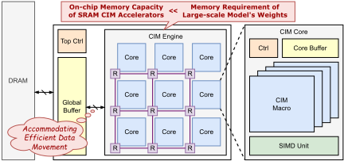
对存内计算（CIM）加速器的评估，我们从中识别出以下局限性：（1）对宏阵列组织的探索有限。现有的架构建模框架主要采用带输入广播互连的权重固定数据流[1, 13, 15, 20, 25]，而未探索诸如输出固定数据流[24]和脉动互连[4, 22, 24]等替代方案。因此，针对CIM宏空间布局的原则性比较仍然缺失。（2）对CIM宏能力的简化假设。大多数框架假设其CIM宏支持计算与输入/输出（I/O）访问同时进行，即所谓的计算-I/O重叠（compute-I/O overlap）[8, 9]。然而，该功能涉及在降低端到端延迟与物理实现开销之间的系统级设计权衡，而这些框架忽略了这一点。（3）对CIM宏及空间布局的设计评估不准确。首先，用于评估不同CIM宏的分析模型往往保真度有限，因为它们仅针对非常有限的硅原型集合进行校准[13, 18]。此外，阵列级物理设计的影响在很大程度上被忽视。布局与布线会给面积占用引入不可忽视的集成开销。因此，这种不准确的评估可能导致次优的CIM加速器设计。
为填补这些研究空白，本文提出了一种面向SRAM CIM加速器的系统性数据流探索框架，即AccelCIM。通过建立全面的数据流设计空间，并系统性地探索端到端系统结果质量（QoR）的设计权衡，AccelCIM能够自动为目标深度神经网络（DNN）模型识别帕累托最优的CIM加速器数据流设计。本文的主要贡献总结如下：
本文的其余部分组织如下：第2节介绍背景与动机。第3节介绍AccelCIM的框架。第4节介绍评估结果。最后，第5节对本文进行总结。
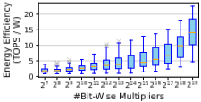
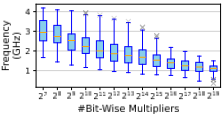
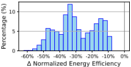
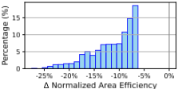
2 Background and Motivation
In this section, we introduce the background of CIM accelerators and explain our motivation for systematic dataflow exploration.
2.1 CIM Accelerator Design
如图 1 所示，SRAM 存内计算（CIM）加速器由多个设计层次构成。CIM 宏是 SRAM 单元阵列与乘累加单元的紧密集成，通常通过手工版图设计或定制的自动化设计工具实现 [3, 5, 16, 23]。多个 CIM 宏通过固定的硬件数据流互连，构成一个 CIM 核心；多个核心再通过灵活的片上网络（NoC）互连，构建出 CIM 引擎。
CIM 加速器各层次上的设计选择构成了庞大的设计空间，由此催生了一系列设计空间探索（DSE）研究 [1, 13, 15, 20, 25]。然而，这些工作对 CIM 核心组织方式的设计权衡关注有限，这促使我们开展更系统性的探索：（1）权重固定数据流被现有研究广泛采用，因为其目标深度神经网络（DNN）模型通常可以完全容纳于片上存储器中。在这种设定下，权重交换开销通常被视为一次性成本，或相对于计算而言可以忽略不计。然而，对于需要在片上/片外存储器之间进行权重交换的大型 DNN 模型，这一结论可能不再成立。（2）输入广播互连也因其简单性而被普遍采用。然而，其物理实现颇具挑战性，因为核心缓冲器与 CIM 宏之间的全局连线会占用大量布线资源，导致其可扩展性较差。
2.2 CIM Macro Design
我们动机的另一个方面源自对 CIM 宏设计变体的版图后评估。我们利用一个开源的 CIM 宏编译器 [12] 生成了图 2 和图 3 中的结果。我们的分析揭示了两个在很大程度上被以往 CIM 加速器设计空间探索（DSE）研究所忽视的 CIM 宏设计权衡：（1）宏容量引入了能效与性能之间的设计权衡，如图 2 所示。拥有更多按位乘法器（即更高计算容量）的较大 CIM 宏由于定制化的计算-存储集成而表现出更好的能效，而拥有较少乘法器和更短时序关键路径的较小宏则可以在更高频率下工作。遗憾的是，这些物理特性在先前的系统级探索中并未得到恰当建模，这可能导致次优设计。（2）计算-I/O 重叠（Compute-I/O Overlap）能够最小化权重交换开销，但会增加功耗和硅面积，如图 3 所示。尽管存在这一权衡，先前的研究通常默认启用该特性，而对其系统级影响的评估十分有限。
| Hierarchy | Parameter | Candidate Values |
|---|---|---|
| Macro | Accumulation Length ( 𝐴𝐿 ) Local Storage Length ( 𝐿𝑆𝐿 ) Parallel Channel ( 𝑃𝐶 ) Pipeline Level ( 𝑃𝐿 ) Compute-I/O Overlap ( 𝑂𝐿 ) Weight Bitwidth ( 𝑊𝐵𝑊 ) Input Bitwidth ( 𝐼𝐵𝑊 ) | 8,16,32,...,256 2,4,8,...,64 2,4,8,...,256 0,1,2,3,4,5 True, False 8 8 |
| Array | Array Row Size ( 𝐵𝑅 ) Array Column Size ( 𝐵𝐶 ) Dataflow Interconnection | 1,2,3,...,64 1,2,3,...,64 WS, OS Broadcast, Systolic |
| Hierarchy | Parameter | Candidate Values |
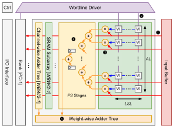
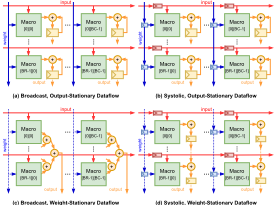
3 AccelCIM Framework
In this section, we first introduce AccelCIM 's dataflow design space in Section 3.1. Then, we detail the architectural modeling of dataflow variants in Section 3.2. Finally, we introduce the post-layout design evaluation flow in Section 3.3.
3.1 AccelCIM Architecture
为了分析 AccelCIM 中性能、面积与功耗之间的权衡，我们考虑存内计算（CIM）宏以及宏阵列排布的联合设计空间。表 2 总结了相关设计参数及其候选取值。
宏。AccelCIM 采用了与 [10] 类似的 CIM 宏设计模板，如图 4 所示。CIM 宏包含 𝑃𝐶 个 bank，每个 bank 存储一个由 𝐿𝑆𝐿 个权重行和 𝐴𝐿 个权重列组成的权重块。在每个 bank 内部，位宽为 𝑊𝐵𝑊 的权重块被切分为 2 比特的分块，并分布式地存储在多个子阵列中。每个子阵列都增设了用于乘累加（MAC）运算的外围电路，包括按位乘法器和加法树。I/O 接口专用于权重更新。值得注意的是，先前的工作通常默认 CIM 宏支持计算与权重更新同时进行 [20, 24]。虽然这一特性减少了权重更新的未决延迟，但也需要额外的硬件资源（例如位线和字线驱动器）。因此，AccelCIM 将计算与 I/O 重叠视为一种可选特性，并探索其相关的设计权衡。
CIM 宏按如下方式计算通用矩阵向量乘法（GEMV）：对于位宽为 𝐼 𝐵𝑊 的输入向量，输入缓冲器将其中的两个位切片广播到所有 SRAM 子阵列（Step 1），同时字线驱动器在每个 SRAM 子阵列内激活一行（Step 2）。这会触发外围按位乘法器并行计算乘积（Step 3）。乘法结果首先被送往子阵列级加法树进行按通道归约（Step 4），随后被送往 bank 级加法树进行按权重归约（Step 5）。归约需要 𝑃𝑆 个周期才能完成，因为组合逻辑经过了流水线化处理，以缩短关键路径并提高 CIM 宏的工作频率。忽略流水线化累加逻辑的填充与排空延迟，CIM 宏的计算行为可以总结如下：每个 CIM 宏每 𝐼 𝐵𝑊 / 2 个周期计算输入激活向量与 𝑃𝐶 个权重行之间的 𝑃𝐶 个并行点积。
3.2 AccelCIM Dataflow
在本节中，我们讨论表 2 中的参数如何决定图 5 所示的四种阵列级数据流的全局矩阵乘法（GEMM）的划分与调度。
宏级 GEMM。单个 CIM 宏存储大小为 ( 𝑃𝐶 × 𝐿𝑆𝐿 ) × 𝐴𝐿 的权重块，激活块的大小为 𝐴𝐿 × 𝑇𝐿 。权重行是指所有 𝑃𝐶 个 bank 中处于相同行索引位置的权重。𝑃𝐶 个 bank 并行执行计算，权重更新则为串行进行。用一个权重行处理一个激活块所需的周期数为
而更新一个权重行所需的周期数为
其中 𝜅 表示 CIM 宏的固有权重写入速度。
对于单个权重块与激活块内部的乘法，外层循环遍历 𝐿𝑆𝐿 个权重行，内层循环遍历 𝑇𝐿 个激活列，使同一条字线（wordline）在多个输入期间保持有效。通过最小化字线翻转，该方法在相同的面积与性能约束下降低了 CIM 宏的开关功耗。一旦某个宏完成当前权重行的乘法运算，它便启动该行的权重更新，并进入下一个权重行。激活块被复用于与后续权重行相乘，直到所有 𝐿𝑆𝐿 个权重行处理完毕。所有数据流均遵循这一循环嵌套；它们的差异主要在于每次块矩阵乘法期间激活与权重在阵列中的移动方式。
阵列级 GEMM。对于 WS-Broadcast 数据流，归约树要求各宏同时开始并结束计算。宏完成当前权重行的计算后，权重更新在每一列中按行依次进行，各宏按顺序接收更新。由于下一轮激活块必须同时送达所有宏，因此当一个宏更新其权重时，该列中的其他宏处于空闲状态，既不更新权重也不进行计算。
相比之下，WS-Systolic 数据流通过使激活块在各行之间以 𝜅 · 𝑃𝐶 · 𝑊𝐵𝑊 个周期的延迟水平错开进入，从而避免了这一问题。一旦激活完成当前权重行的计算，新权重便以类似的错开方式进入每一列。这确保了每个宏在完成计算后即可更新当前权重行，使所有宏在计算与权重更新这两项任务中至少执行其中一项。
C. Xue, Y. Wang, A. Guo, Y. Shi, J. Zhou, X. Dong, Y. Yin, Y. Zhang, T. Jia, W. Gao, Q. Wu, X. Si, J. Yang, and G. Sun
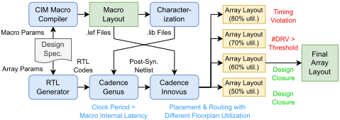
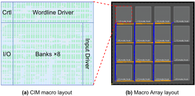
对于 OS-Broadcast 数据流，激活的移动遵循 WS-Broadcast 模式，但权重更新有所不同：同一列中的宏共享同一个权重块，更新后的权重被同步广播到该列中的所有宏。
在 OS-Systolic 数据流中，一旦某个宏完成本地计算，它便开始用来自上游邻居传递的权重更新其当前权重行。当权重更新完成后，该宏从其左侧邻居接收下一轮激活块的初始比特，这些比特将用于当前周期的计算。
计算-I/O 重叠（Compute-I/O Overlap）。如果宏支持计算-I/O 重叠，那么当宏完成对当前权重行的乘法运算后，对下一行的计算便可以与当前行的更新同时开始。否则，计算必须等待权重更新完成后才能进行。
在 WS-Broadcast 数据流中，所有宏同步执行计算，需要在整个阵列中逐行更新权重。当支持计算-I/O 重叠时，在更新进行期间，对下一个权重行的计算可以使用相同的激活块继续进行。如果满足条件 𝐵𝑅 · 𝑇𝑠 ≤ 𝑇𝑐，则所有宏的权重都会在下一轮激活块被送达之前完成更新，从而有效解决了宏空闲的问题。
对于其他数据流，启用计算-I/O 重叠可以降低延迟，但整体流程基本保持不变。其主要效果是减少了每个宏的计算与权重更新延迟。如果不支持计算-I/O 重叠，则单个权重块与激活块之间乘法的周期数由下式给出：
计算-I/O 重叠将块矩阵乘法的周期数减少为：
周期数的优化比率为：
因此，启用计算-I/O 重叠最多可将延迟降低 50%。然而，在大多数 DNN 加速器中性能最佳的设计里，由于 SRAM CIM 的计算密度很大，𝑇𝑐 通常比 𝑇𝑠 大数倍，因此实际的延迟降低幅度往往较为有限。
3.3 CIM Macro Array Generator
为了准确评估各种设计的版图后质量，我们开发了一个自动生成器来生成 CIM 宏阵列版图，其工作流程如图 6 所示。
该工作流程从 CIM 宏版图生成开始。给定 CIM 宏的规格，我们采用一个开源的 SRAM CIM 编译器来生成相应的宏版图 [12]。生成的 CIM 宏版图示例如图 7(a) 所示。CIM 宏版图经过 SPICE 仿真以提取其时序和功耗特性，这些特性随后被编译为标准时序库 .lib 文件。与此同时，宏的几何信息被抽象为库交换格式 .lef 文件。.lib 和 .lef 文件将在后续的数字设计流程中加以利用。
接下来，我们生成宏阵列版图。我们首先将宏阵列规格转换为寄存器传输级（RTL）代码。随后，我们使用 Cadence Genus 将 RTL 代码综合为门级网表，其中目标工作频率由 CIM 宏的内部延迟决定。然后，我们使用 Cadence Innovus 进行布局布线。布线后的宏阵列版图示例如图 7(b) 所示。为了评估不同互连拓扑对布线资源的需求，P&R 过程在不同利用率的布局规划上执行。CIM 宏阵列的最终布局规划是最紧凑的实现，它在满足时序约束的同时将设计规则违例（DRV）的数量保持在可接受的范围内。基于最终布局规划，我们可以获得其面积以及阵列集成的功耗开销。
4.1 Experimental Setup
AccelCIM 探索了表 2 中描述的数据流设计空间，并采用贝叶斯优化来识别帕累托最优设计 [14]。我们开发了一个自研的周期精确仿真器，用于获得运行特定应用所需的总周期数。所有 CIM 宏阵列均配备相同的核心缓冲区，该缓冲区提供足够的容量和带宽，以充分利用所有计算资源。CIM 宏和完整阵列的物理版图采用 28nm 工艺技术生成。对于所探索的所有设计，我们评估其性能、功耗和面积（PPA），其定义如下：
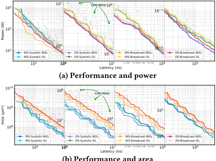
(b) 性能与面积
频率。当考虑特定应用时，我们使用端到端延迟作为性能指标。
4.2 Main Results
在本节中，我们在大语言模型推理应用中对不同的存内计算（CIM）加速器设计候选方案进行比较。我们选择 LLaMA-3-8B [7] 作为目标模型，并采用 W8A8 量化以实现纯整数的通用矩阵乘法（GEMM）运算。我们假设 CIM 核心处理批大小为 8 的请求，每个请求的序列长度为 1024 个 token。当关注 Q/K/V 投影操作时，相应的 GEMM 规模 𝑀、𝑁、𝐾 分别为 8192、4096、4096。性能-面积与性能-功耗的帕累托前沿如图 8 所示。我们还展示了先前工作 CIM-MXU [24] 所探索的设计候选方案的效率。
如图 8(a) 所示，各数据流在面积效率方面存在显著差异。脉动数据流在面积效率上始终优于广播数据流，这是由于其布线资源需求更低。在脉动数据流家族中，无重叠的输出固定（OS-Systolic-NOL）变体由于复用受限且利用率较低而表现欠佳。在其余三种脉动数据流（WS-NOL、WS-OL 和 OS-OL）中，WS-NOL 在几乎整个性能范围内实现了最佳的面积效率，只有在面积极低的区域中才会出现 WS-OL 或 OS-OL 获得略低面积开销的情况。与显著的面积差异相比，图 8(b) 表明各数据流之间的功耗差异相对较小。对于采用支持计算-I/O 重叠宏的数据流而言，其能效明显更低，这主要是由于更频繁的缓冲和开关活动所致。WS-Broadcast-NOL 在高计算能力区域提供了更好的能效，而两种不支持计算-I/O 重叠的脉动数据流（WS-Systolic-NOL
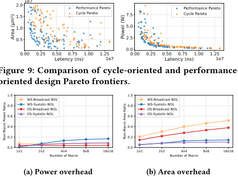
和 OS-Systolic-NOL）在其余大部分工作范围内变得更具优势，这归因于其更简单的控制和更少的并发数据访问。
为了论证 AccelCIM 中宏-阵列协同设计与精确 PPA 评估的重要性，我们以 WS-Systolic-NOL 数据流为例。对于计算吞吐量这一最受关注的指标而言，性能由频率和总周期数共同决定。如果仅关注周期数，并在缺乏时序感知建模的情况下进行阵列级探索 [24]，所得到的帕累托前沿在周期数方面确实显得更有优势。然而，一旦考虑频率的影响，实际可达到的性能就会劣于这种仅基于周期的探索所预测的结果。这一差异在图 9 中清晰可见，表明一个精确而全面的评估框架对于获得真正最优的设计点至关重要。
4.3 Performance Analysis
本节中，我们对各个设计选项在系统层面的影响进行消融实验，包括阵列规模、宏单元规模以及计算-I/O 重叠。基于评估结果，我们为未来的存内计算（CIM）加速器设计者提炼出若干要点。
阵列组织。我们通过分析集成不同数量 CIM 宏单元的开销来评估不同阵列组织的可扩展性。所有阵列配置均采用相同的、计算能力为 4 TOPS 的 CIM 宏单元。图 10(a) 显示，所有数据流的功耗开销始终低于 20%。然而，图 10(b) 显示，广播数据流产生的面积开销远高于脉动数据流，因为其全局互连比脉动数据流的局部连接需要更多的布线资源。
要点 #1：相对于完全采用宏单元内与宏单元间广播的方式，集成脉动互连可以在不降低能效的前提下提升面积效率。
宏单元选择。为了在系统层面确定最优的宏单元计算能力，我们使用不同的 CIM 宏单元实现了包含 512K 个按位乘法器的宏单元阵列，并评估
C. Xue, Y. Wang, A. Guo, Y. Shi, J. Zhou, X. Dong, Y. Yin, Y. Zhang, T. Jia, W. Gao, Q. Wu, X. Si, J. Yang, and G. Sun
| Model | #Layer | Hidden Dim | Sequence Length | #CIM Core | Best Dataflow | (LSL,AL,PC,PL,BC,BR,TL) | Latency(ms) | Power(W) | Area(mm 2 ) |
|---|---|---|---|---|---|---|---|---|---|
| Qwen3-0.6B | 28 | 1024 | 8192 | 1 | OS-Systolic-OL | (2,128,8,2,12,2,16) | 216.552 | 1.869 | 2.916 |
| Llama3-8B | 32 | 4096 | 8192 | 4 | OS-Systolic-OL | (2,256,16,4,4,2,32) | 886.272 | 0.994 | 2.824 |
| Llama3-70B | 80 | 8192 | 8192 | 8 | OS-Systolic-OL | (2,256,16,4,4,2,32) | 5771.04 | 0.996 | 2.839 |
| GPT3-175B | 96 | 12288 | 2048 | 16 | WS-Systolic-NOL | (2,256,4,2,3,8,256) | 2221.92 | 0.842 | 1.993 |
| GPT3-175B | 96 | 12288 | 131072 | 64 | WS-Systolic-NOL | (2,256,4,2,2,12,512) | 35753.8 | 0.904 | 2.062 |
| Model | #Layer | Hidden Dim | Sequence Length | #CIM Core | Best Dataflow | (LSL,AL,PC,PL,BC,BR,TL) | Latency(ms) | Power(W) | Area(mm 2 ) |
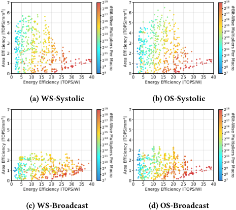
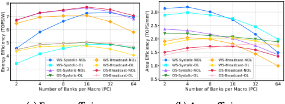
(a) 能效
(b) 面积效率
所得设计的质量。该计算能力也与所采用的 CIM 宏单元编译器所支持的最大值相匹配。如图 11 所示，在四种不同的数据流中，更大的 CIM 宏单元能够提供更好的整体能效，因为相对于外围逻辑，CIM 宏单元在总功耗中占据主导地位。然而，由于显著的内部广播开销，它们所提供的面积效率并非最优。相反，中等规模的 CIM 宏单元通过在宏单元内实现成本与宏单元间集成开销之间取得平衡，实现了最高的面积效率。
要点 #2：中等规模的 CIM 宏单元在能效与面积效率之间提供了最佳的系统级权衡。
计算-I/O 重叠。我们研究支持计算与权重更新同时进行对加速器面积效率和能效的影响。我们采用的宏单元与基线 4-TOPS 宏单元仅在存储体（bank）数量（𝑃𝐶）上有所不同，并使用不同数据流构建了 2 × 4 的宏单元阵列。如图 12(a) 所示，启用计算-I/O 重叠通常会导致能效下降 25-35%，这主要归因于额外的宏单元内电路。然而，图 12(b) 显示，当 𝑃𝐶 相对较大时，计算-I/O 重叠有利于面积效率。这是因为当 CIM 宏单元中的多个 bank 争用同一 I/O 端口时，权重更新开销会更为显著。
要点 #3：启用计算-I/O 重叠可以提升带宽受限设计的面积效率，但以牺牲能效为代价。
4.4 Case Study: LLM Inference
我们进一步在一系列大语言模型（LLM）工作负载上评估 AccelCIM，包括 Qwen3-0.6B[21]、LLaMA-3-8B/70B[7] 和 GPT-3 175B[2]，涵盖边缘与云端两种部署场景。CIM 核心阵列的探索以 20 TOPS 的总算力上限为约束。我们将性能、功耗与面积（PPA）权衡度量为 𝑙𝑎𝑡𝑒𝑛𝑐𝑦 2 · 𝑝𝑜𝑤𝑒𝑟 · 𝑎𝑟𝑒𝑎，并在表 3 中给出最优设计点。延迟以预填充（prefill）阶段的首 token 时间（time-to-first-token）来衡量。
如表 3 所示，边缘场景更倾向于采用 OS-Systolic-OL，并结合适中的宏单元尺寸与多核扩展。启用重叠的流水线与按列权重共享在保持合理的单核面积与功耗的同时，带来了可观的加速。而对于 GPT-3 175B，WS-Systolic-NOL 再次成为更优选择，这是因为其单核面积与功耗更低，而在为长序列处理扩展至数十个核心时，这一点至关重要。值得注意的是，最优设计表现出较低的存储-计算比（LSL），这意味着对于 LLM 这类计算密集型应用而言，存储容量并不那么重要。总体而言，这些结果凸显了最优设计点对模型结构和部署约束的强烈依赖，表明宏单元阵列协同设计与精确的 PPA 评估对于实现真正优化的基于 CIM 的加速器必不可少。
5 Conclusion
本文提出了 AccelCIM，一个面向 SRAM 存内计算（CIM）加速器的系统化数据流探索框架。我们指出了既有 CIM 加速器设计空间探索（DSE）框架中过于简化的设计选择与不精确的建模。针对这些局限性，AccelCIM 构建了全面的数据流设计空间，并对候选设计的版图后质量进行了严格评估。我们的结果表明，脉动互连通常更为高效。此外，是否启用计算-I/O 重叠以及如何选择最优宏单元容量，应针对目标应用进行仔细调优，以在能效与面积之间取得平衡。
证据核查
1 条证据未在原文中核对到